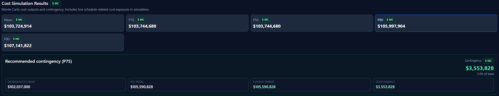
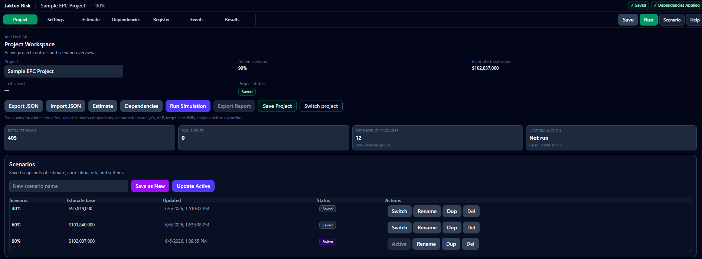
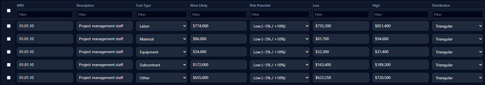
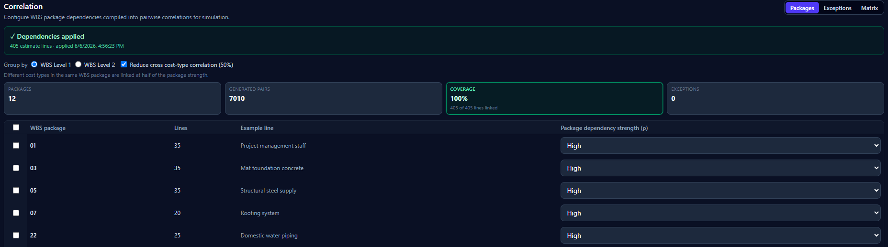
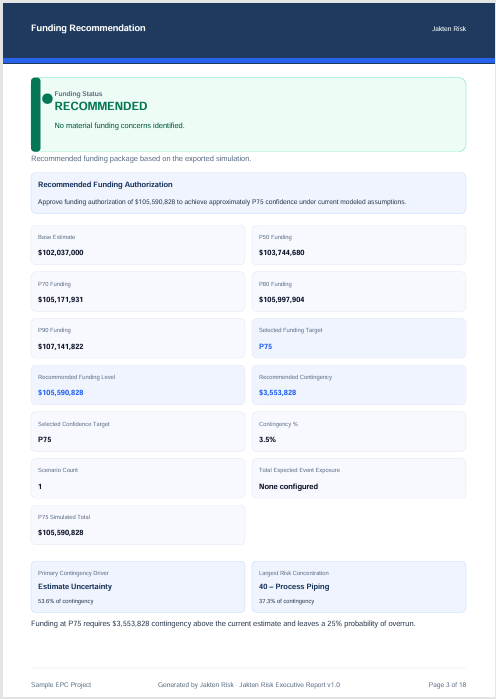

Jakten Risk
Monte Carlo simulation for construction estimates.
Jakten Risk helps estimators, risk managers, and project controls teams quantify uncertainty, model dependencies, and explain contingency before funding decisions are made.
Why Jakten Risk?
Most project teams understand contingency is needed. Few can clearly explain why.
Jakten Risk combines estimate uncertainty, dependency modeling, risk attribution, and Monte Carlo simulation into a practical workflow built specifically for EPC and construction projects.
Built for practical project risk analysis
Jakten Risk in action
Model uncertainty across your estimate, define dependencies between risk drivers, run Monte Carlo simulation, and deliver executive-ready reports that make funding recommendations clear.





For estimators, risk managers, and project controls teams.
Jakten Risk helps teams model uncertainty, understand contingency drivers, and communicate funding recommendations clearly.
Interested in the Jakten Risk pilot program?
Jakten Risk is entering a limited pilot program for construction and EPC professionals who want a practical way to quantify uncertainty and communicate project funding recommendations.
Request Pilot Access